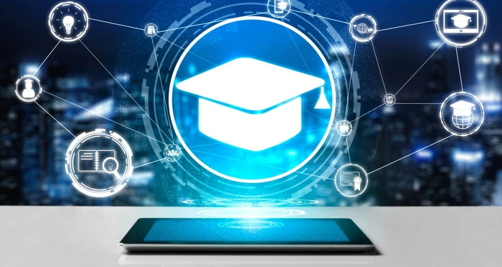

<!DOCTYPE html>
<html lang="pt-br"></html>
<meta charset="UTF-8">
  <link rel="stylesheet" href="style.css">
 <head>

  <meta charset="UTF-8">
  <title>A Tecnologia na educação</title>]
  <h1>Novas maneiras de se utilizar </h1>
 <style>img {width: 35%;}</style>
 
  <ul>
  <li>Mooc's e cursos online: Plataformas como Coursera, edX e Khan Academy, além de recursos como TED Talks, oferecem acesso a conteúdo
de altíssima qualidade de universidades ao redor do mundo, permitindo que os alunos se conectem com uma rede global de aprendizado.</li>
 <li> Aulas de intercâmbio cultural: Tecnologias de videoconferência e plataformas colaborativas podem permitir que alunos de diferentes países
trabalhem juntos, discutam e aprendam uns com os outros em projetos compartilhados.</li>
 <li> Monitoramento contínuo: Ferramentas de análise de dados podem coletar informações sobre o desempenho dos alunos e usar algoritmos para prever quem
está em risco de não atingir objetivos acadêmicos, permitindo que os educadores intervenham mais rapidamente.</li>
 <li> Planejamento de currículos personalizados: Com base nas preferências e no histórico de aprendizado, os currículos podem ser ajustados para refletir
 os interesses e necessidades de cada aluno.</li>
 <li> Colaboração em tempo real: Tecnologias de colaboração como o Google Docs ou Microsoft OneNote permitem que os alunos trabalhem juntos em projetos em tempo
 real, mesmo estando em locais diferentes.</li>
</ul>

<a href="aba3.html">Página anterior</a>